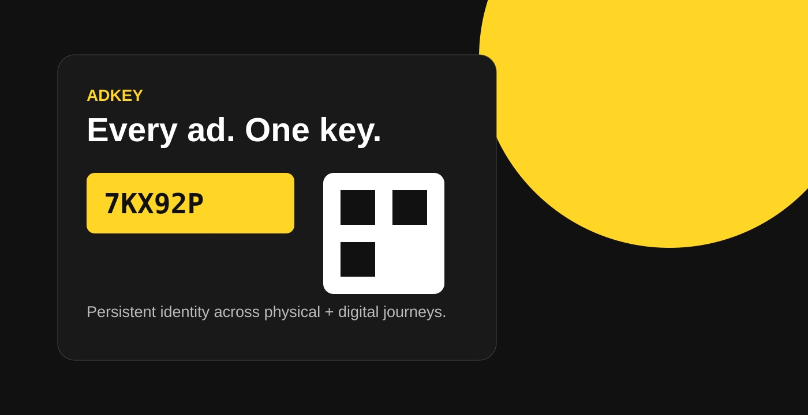

I started with a simple observation: advertising disappears too quickly.
A person can notice an ad on a billboard, in print, on TV or on social—and then the moment is gone. The campaign may be measurable inside an individual channel, but the audience's journey is fragmented across channels.
ADKey began with a product question: what if the ad itself had a persistent identity that could carry the experience into the next moment?
My role: turn an observation into a product model
I did not begin with a dashboard or a QR code. I started with the handoff between an ad impression and the person interested enough to act. I framed the problem around continuity, recognition and the different needs of advertisers and audiences.
The leadership challenge was to reduce a broad ecosystem idea to a simple interaction primitive that could be understood by product, design, marketing and engineering: the AdKey.
Strategy: one identity, many entry points
I reduced the interaction to one reusable product primitive. An advertiser creates a destination, assigns an AdKey and distributes that identity wherever the campaign appears. The audience encounters the same recognizable pattern whether the original impression is physical or digital.
Define the campaign destination and generate a persistent identity for the experience.
Use the same key across channels so an audience can continue the journey without learning a new interaction each time.
Connect scans, views, clicks and downstream actions to the same campaign identity and journey.
Design the ecosystem, not just the screen
ADKey requires multiple experiences to work as one system: an advertiser workflow for creating and managing the destination, a public entry experience for the audience, and a shared identity model connecting campaign activity.
The visual direction—bold black and yellow—supports the same product strategy. The identity needs to be recognizable, direct and portable enough to appear consistently across channels.
Leadership impact
This is the kind of problem I enjoy leading: find the overlooked moment in a system, define a simple interaction model, and align the experience around it. ADKey demonstrates my approach from product vision and information architecture through ecosystem thinking and the interaction details people actually use.